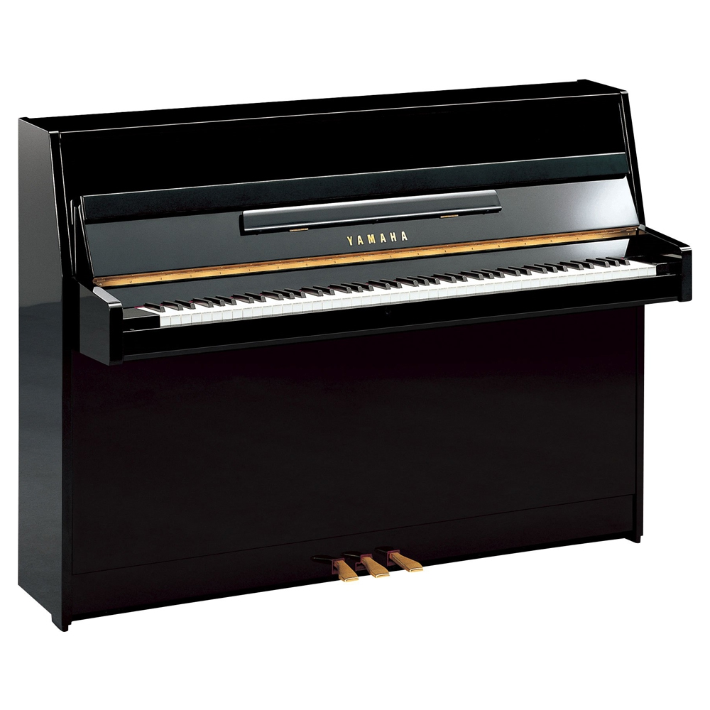
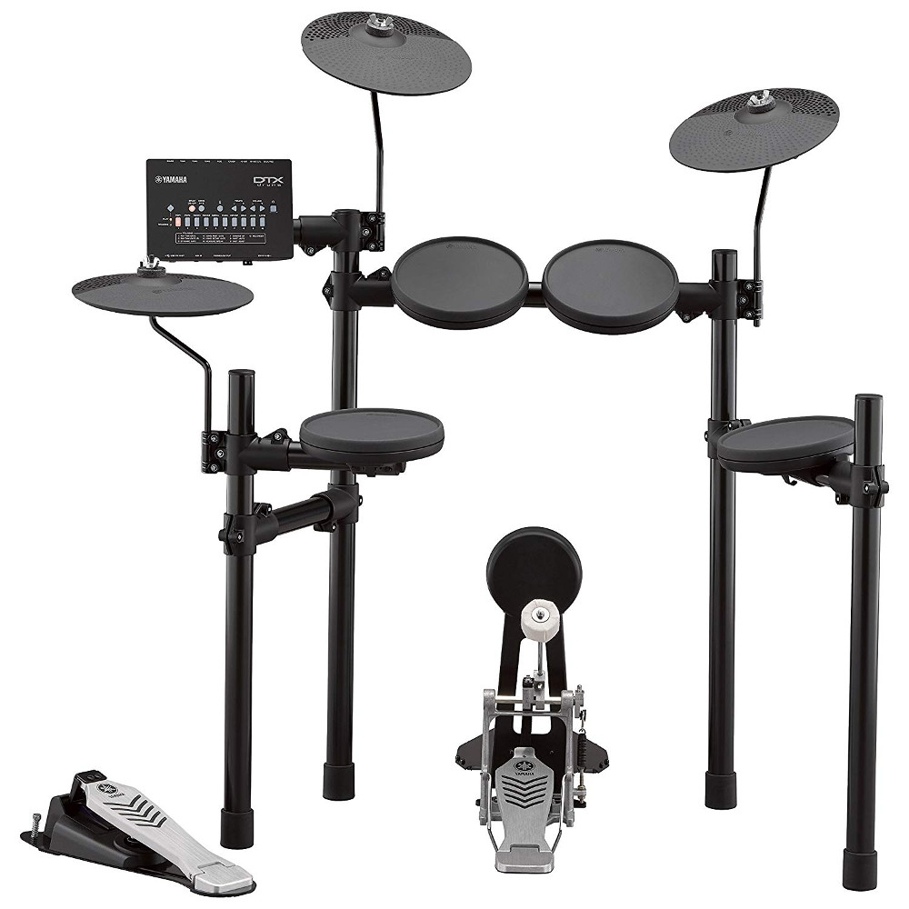
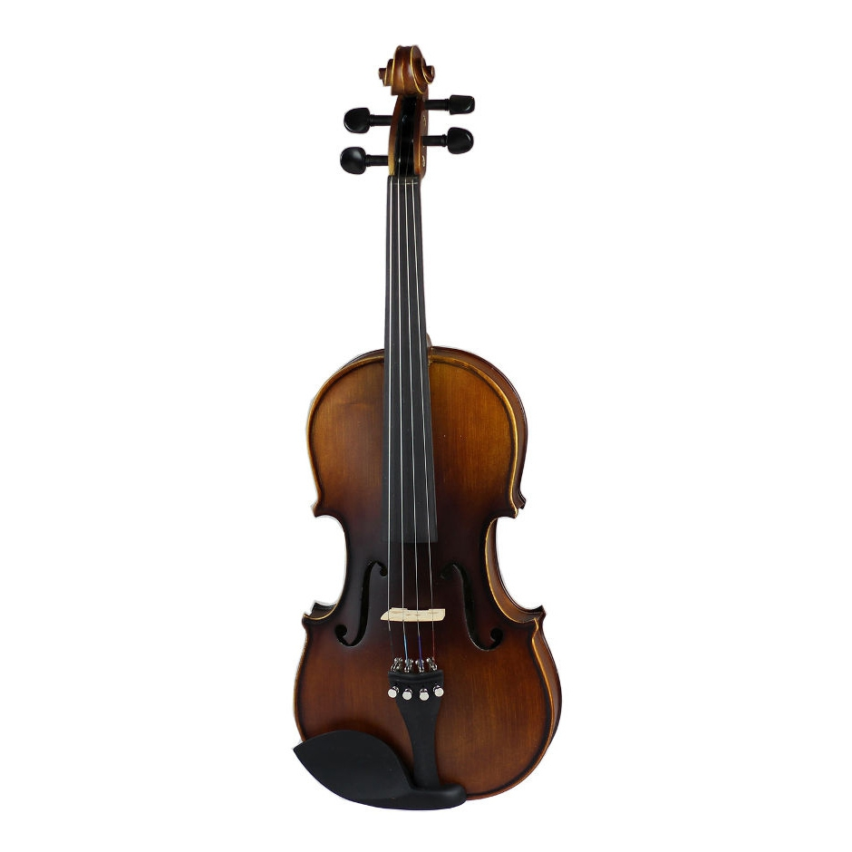
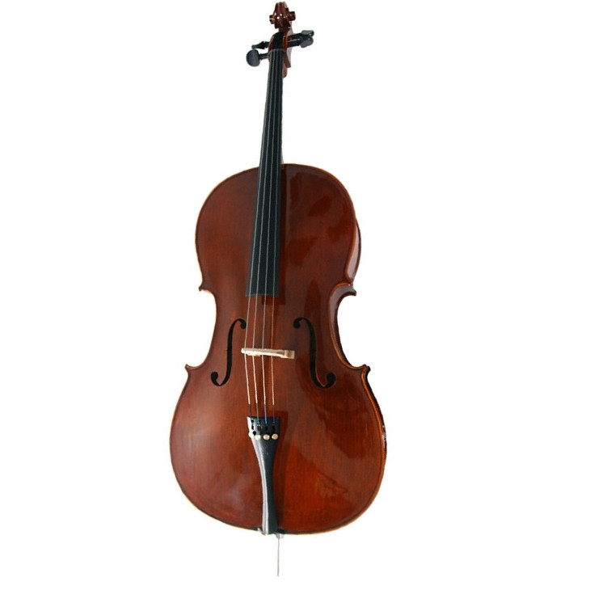

1)Admira Admira Alba ADMI0200S Klasik Gitar

2)Schecter C-5 SGR Bas Gitar

3)Fenix KG-01/NT Elektro Gitar
4)Yamaha B1 Akustik Duvar Piyanosu

5)Yamaha CFX Akustik Tam Kuyruklu Piyano

6)Yamaha Rydeen 20 Inch Aksamlar Dahil Davul Seti
7)Yamaha DTX 432K Dijital Davul Seti
8)Rösler VLA-8 Keman
9)Stentor 1586/A Conservatoire Çello